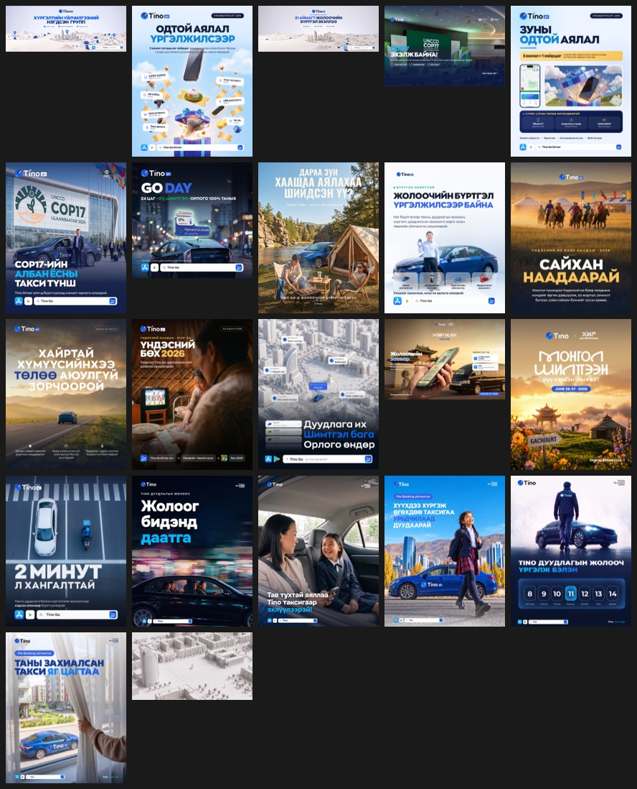
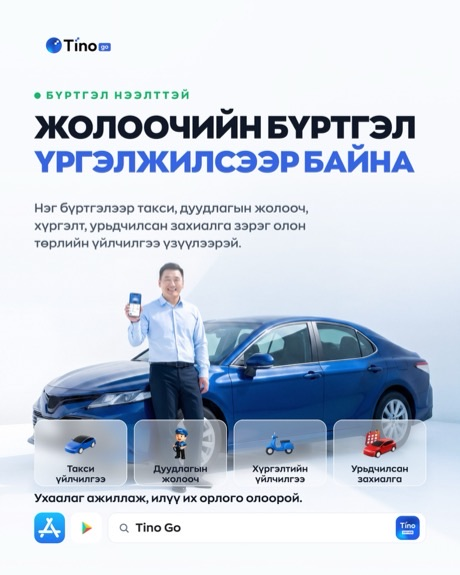
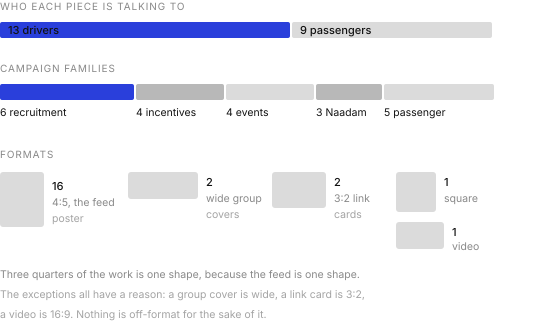
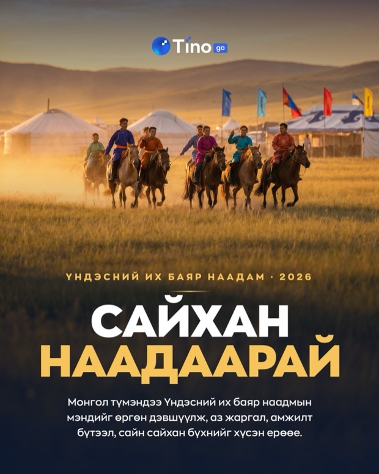
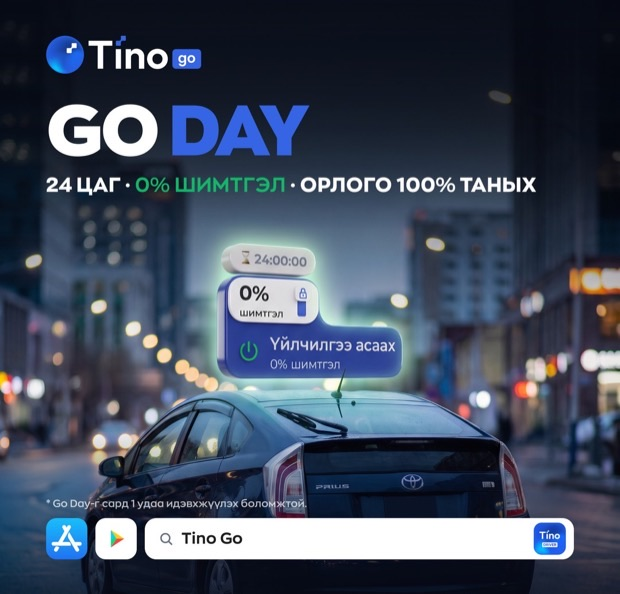

Posters for Tino
2026
Twenty two pieces over a year on the Tino Go Driver page. Half of them are trying to recruit a driver, half are trying to reassure a passenger, and I ran them off the same brand kit without ever making the same poster twice.1
Twenty two of them

Seen together the system is obvious, and seen one at a time in a feed it is invisible, which is how I wanted it. I keep the logo top left with its service badge. The handle top right. The headline in a heavy condensed Mongolian face, always uppercase, always the first thing you read. Store badges and the product lockup close the bottom edge.
Inside that frame I let almost everything else move.
Two audiences, one page
The same page has to recruit drivers and sell rides. Those readers want opposite things, so I split the work into two registers and did not try to blend them.

I made the driver work bright, high contrast and mostly information. Steps, amounts, what you get, how long it takes. Somebody deciding whether to spend their evenings driving a stranger around wants the terms.
I made the passenger work photographic and almost wordless by comparison. A mother and child in a back seat. A schoolgirl walking toward a blue car. Somebody pulling back a curtain to find their taxi already outside. None of those sell a feature. They sell the moment after the feature worked.
Drivers get told the terms. Passengers get shown the relief. Same brand, same week, same page, and the two never borrow each other’s tone.
Mostly one shape

Sixteen of the twenty two are 4:5. That is the shape that takes the most vertical space in a Facebook feed before it gets cut off, and once I knew that, I stopped arguing about format.
Every exception has a job. The two wide banners are group covers. The 3:2 pieces are link cards. The video is 16:9 because video is. I never went off-format for the sake of looking different.
Campaigns arrive in pairs
The pattern I did not expect to find until I laid them out by date. The bigger campaigns each got two pieces rather than one.
The Starry Trip promotion was announced, then launched. COP17 got a partnership announcement and then a second piece once the detail firmed up. The Xyyp Music Festival shuttle got one post for everybody and a separate one that was purely instructions for the drivers working it.
That last split is the one I learned most from. A festival shuttle is a consumer story and an operational briefing at the same time, and trying to do both in one poster gives you a poster that does neither. Two pieces, two jobs, one campaign.
Designing to a national calendar
Three of the twenty two exist because of Naadam.

One is a straight greeting that sells nothing. One points out that everybody drives to the countryside during the holiday, which is a genuine service message dressed as a seasonal note. And one is a wrestling prediction game where you pick sixteen wrestlers and enter a forecast.
A prediction game is not a poster, it is a small product, and I had to design the entry, the picking and the result. It sits in this set because it went out as a post, but it is the piece in here that did the most work.
The promise a poster has to keep
One of these posters announces Go Day, the 0% commission day I designed inside the driver app. I like seeing the same thing twice, once as a product surface and once as a promise on a poster.

Several pieces in this set make an earnings claim to somebody deciding whether to drive. Extra income in your free time. More calls at a lower commission. Two minutes to register. Every one of those is checkable by the person who signs up, roughly a week later.
That is the line I watched hardest across the set. Recruitment creative is the easiest place in a company to overpromise, because the person who writes the headline never meets the driver who tests it.2
- All twenty two were published on the Tino Go Driver Facebook page and are still public. The counts, formats and groupings on this page come from reading the posts rather than from a campaign brief.
- This is not a criticism of any particular poster here. It is the standing risk in gig recruitment creative, and the only real defence is checking what happened to the people who answered it.